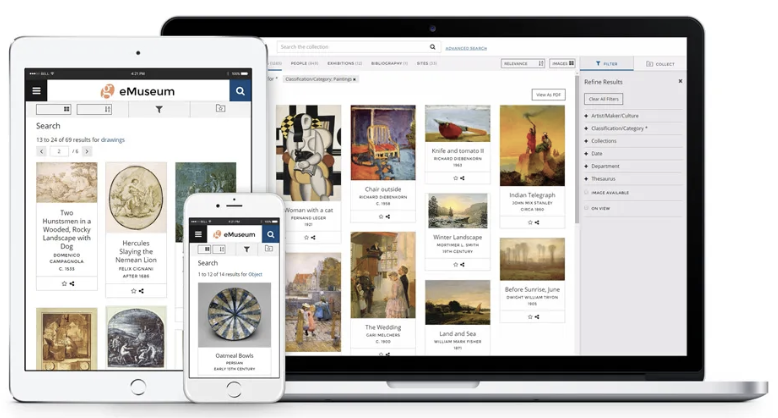

Al vivir en un mundo en donde la tecnología se vuelve cada día más imprescindible para nuestras vidas, es casi indiscutible que no solo la gente se debe acomodar a la era digital, sino que también los medios.
Durante la pandemia el teletrabajo se hizo indispensable, lo que obligó a muchos a actualizarse con las nuevas tecnologías, ocurrió un fenómeno llamado digitalización obligada. Junto con esto, muchas empresas, organizaciones, tiendas y otras tuvieron que reinventarse. Así en el año 2020, nació el primer museo virtual del mundo. Este es completamente digital, y nació a través de “El objetivo del arte es comunicar y compartir ideas (...) (pero) mucha gente no puede viajar a un museo. (...) Esta es una manera de hacerlo mucho más accesible.” Los tours virtuales se incrementan durante la pandemia, los “visitantes” sintieron que solo veían “un montón de fotografías unidas , en lugar de caminar por una galería de arte, algo que el VOMA pretende cambiar” dijo Semple.
Todo se remonta años atrás, cuando en 1947 André Malraux imaginó un museo sin paredes en el que cada persona pudiese formar su propia realidad. Buscaba descomponer y cambiar la estructura del museo tradicional para crear nuevas formas de sentir el arte. Museos de todo el mundo como el "Hermitage", "MoMa" o "el Prado" ofrecen la posibilidad de visitarlos de forma virtual. Pero son muy pocos los que nacieron en la red. Se podría decir que el primero del mundo abrió sus puertas en septiembre del año pasado. El Virtual Online Museum of Art (VOMA) es obra del artista británico Stuart Temple, que creía en un arte más democrático y vio la posibilidad que ofrece internet para llevar a cabo tal tarea. Creado como un edificio y no como una sencilla sala de visionado, para que el visitante interactúe como si estuviera allí.
Por otro lado, el primer museo 100% online es el actual museo español llamado MUV ubicado en Galicia, manteniendo la fidelidad a un paisaje y a una identidad pero de forma completamente virtual, que se puede visitar en la web con una visualización digital o recorrerlo con gafas VR.
